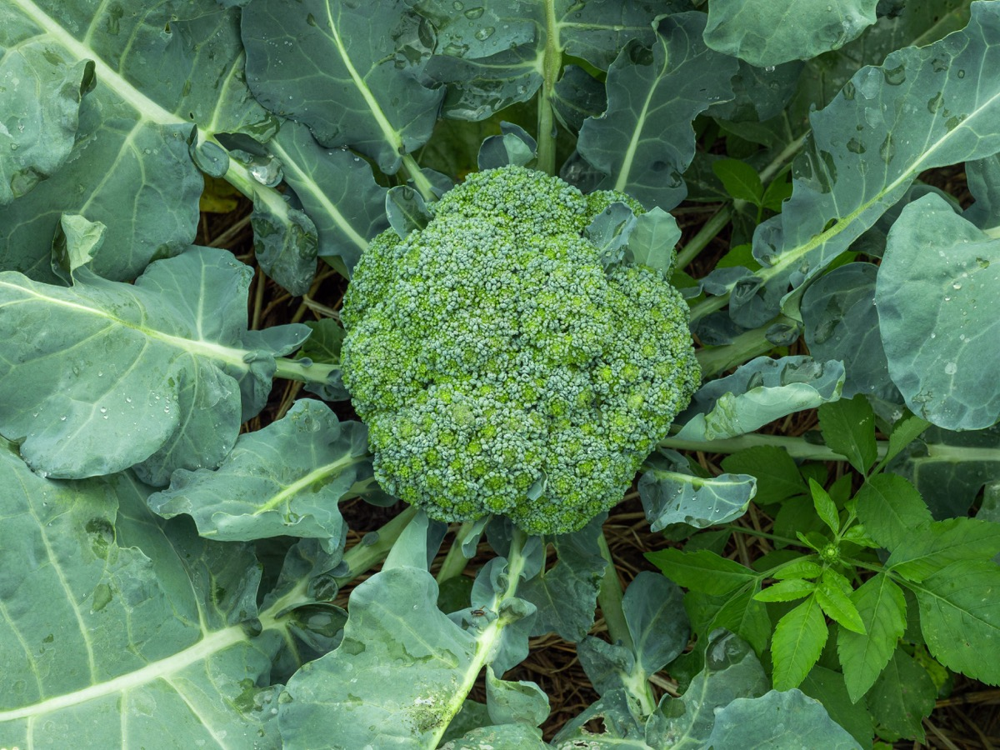

Broccoli contains a compound that doesn't actually exist — until you eat it.
The most powerful compound in broccoli is sulforaphane. But sulforaphane doesn't exist in raw broccoli. The plant stores two separate chemicals in different cellular compartments — glucoraphanin and the enzyme myrosinase — deliberately apart. Only when you bite down, or run a knife through a floret, do the compartments rupture. The compounds mix. A chemical reaction fires. Broccoli synthesizes its own medicine in the moment of being eaten.
Chewing or cutting ruptures cell walls, forcing two compounds that were kept apart to finally meet.
Glucoraphanin meets myrosinase. The enzyme converts it to sulforaphane — linked to cancer prevention, inflammation reduction, and blood sugar control.
Sulforaphane activates the Nrf2 pathway — the body's master switch for antioxidant defense and detoxification.
Myrosinase is heat-sensitive. Cook broccoli immediately after cutting and the enzyme dies before the reaction completes. The glucoraphanin stays locked in an unusable form.
Chop the broccoli. Wait 40 minutes. Then cook. During that window, myrosinase completes the conversion before heat stops it. One trick: mustard powder contains heat-stable myrosinase — add a pinch to cooked broccoli and the reaction fires even after the fact.
Sulforaphane retention relative to raw:
I do not like broccoli. And I haven't liked it since I was a little kid and my mother made me eat it. And I'm President of the United States,
and I'm not going to eat any more broccoli. George H.W. Bush — President of the United States, 1990
From Roman antiquity to the United States Supreme Court, broccoli has accumulated a stranger history than almost any other vegetable.
Roman naturalist Pliny the Elder calls broccoli "one of the most delicious vegetables" in Naturalis Historia.
Italian seeds arrive in France with the Medici court. French nobility calls it "Italian asparagus" — a name that didn't stick.
Sicilian immigrants Stephano and Andrea begin commercial cultivation in California. Their "Andy Boy" brand is still on shelves today.
President Bush bans broccoli from Air Force One. Growers ship 10 tons to the White House in protest.
Justice Scalia raises broccoli in ACA Supreme Court arguments. A vegetable becomes shorthand for the limits of government power.
A lone tree in Aberfeldy, Scotland — shaped exactly like a broccoli floret — becomes a global internet sensation.
About 25% of the population carries the TAS2R38 variant on chromosome 7, making broccoli's glucosinolates taste intensely bitter. This is genetics, not preference — which explains why the vegetable divides people with such reliability.
In 1970, Americans ate almost no broccoli. Today, the numbers are different.
of the world's broccoli
is grown in China
China produces 88% of the world's broccoli. When you eat it in Berlin, London, or New York, it almost certainly grew in a Chinese field.
For a food that accounts for a $15 billion global market, broccoli is remarkably efficient.
The efficiency has a vulnerability. California's Salinas Valley — 90% of US supply — faces aquifer depletion from over-pumping. Climate models push growing regions northward within decades.
That's all it takes. Chop your broccoli. Set a timer. The plant does the rest — synthesizing a compound linked to cancer prevention, reduced inflammation, and lower blood sugar. You need a knife and patience.
Broccoli is what it always was: ancient, efficient, misunderstood. A flower we eat before it blooms. A weapon the plant evolved against insects that humans accidentally hijacked for their own biology. A vegetable one president banned from his plane while ten tons arrived at his doorstep in protest.